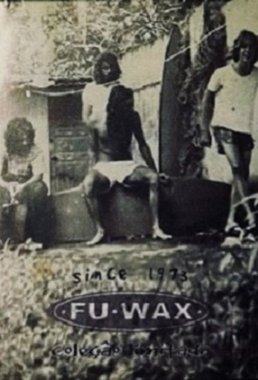

Fu Wax
A melhor parafina do mundo


Um pouco da história
Anos 60
Um pouco da história
Anos 60


Se você quisesse surfar,teria de fazer sua própria parafina, não existia loja de surfe e nem muitos recursos relacionados ao esporte.
Fuad queria surfar,e juntamente de seus irmãos Wady e Elias,começaram a fazer parafina como todo mundo que fosse entrar no mar com uma prancha qualquer.
Passaram anos na garagem dos avós pensando na possibilidade de fazer uma parafina que trouxesse segurança,diferente de todas as outras feitas na época pela totalidade.
(Pitangueiras + Guarujá)
Se você quisesse surfar,teria de fazer sua própria parafina,não existia loja de surfe e nem muitos recursos relacionados ao esporte.
Fuad queria surfar,e juntamente de seus irmãos Wady e Elias,começaram a fazer parafina como todo mundo que fosse entrar no mar com uma prancha qualquer.

Passaram anos na garagem dos avós pensando na possibilidade de fazer uma parafina que trouxesse segurança,diferente de todas as outras feitas na época pela totalidade.
Início dos anos 70
Início dos anos 70


Fuad com sua obcessão pelo surfe,
o fez determinado em criar uma parafina superior e, decidido consultar um químico sobre a situação.
O profissional falou a respeito de um material secreto que deveria ser testado
na criação de sua parafina.
Resultando em um novo caminho
pro jovem, fazendo uma surf wax mais adequada (porém não perfeita),
além de impulsionado a inventar a marca
"Fu Wax" e também, de abrir a primeira
loja de surf do Brasil ("Mansurf").
Fuad com sua obcessão pelo surfe,
o fez determinado em criar uma parafina superior e, decidido consultar um químico sobre a situação.
O profissional falou a respeito de um material secreto que deveria ser testado
na criação de sua parafina.
Resultando em um novo caminho
pro jovem, fazendo uma surf wax mais adequada (porém não perfeita),
além de impulsionado a inventar a marca
"Fu Wax" e também, de abrir a primeira
loja de surf do Brasil ("Mansurf").
1973-1987
1973-1987


Fuad estava insatisfeito com seu produto,
dedicou sua vida em criar uma nova wax,
só que premium.
O grupo Fu Wax, consistido dos 3 irmãos Mansur vivendo no próprio laboratório, passava
então, cada dia criando de 3 a 5 barras únicas.
No final do dia eram testadas,dadas sempre
uma nota entre 0 e 10, e em quase duas décadas
foi raro pelo menos uma adquirir certa nota
acima de 3.
Depois de quase 2 décadas resumidas em erros,
Fu perde uma herança paterna em 1987,
principiando na quebra desse sonho, a criar
uma parafina de surf perfeita.
Fu Wax estando na beira da falência,
acontece um acidente no laboratório.
A matéria prima tinha sido derretida antes
a tempo do ponto pressuposto, resultando
em uma liquefação prematura, mudando
completamente a solução da parafina.
Esse acidente deu a melhor chance de produzir
a wax ideal pros surfistas (que era mínima).
Fuad estava insatisfeito com seu produto,
dedicou sua vida em criar uma nova wax,
só que premium.
O grupo Fu Wax, consistido dos 3 irmãos Mansur vivendo no próprio laboratório, passava
então, cada dia criando de 3 a 5 barras únicas.
No final do dia eram testadas,dadas sempre
uma nota entre 0 e 10, e em quase duas décadas
foi raro pelo menos uma adquirir certa nota
acima de 3.

Depois de quase 2 décadas resumidas em erros,
Fu perde uma herança paterna em 1987,
principiando na quebra desse sonho, a criar
uma parafina de surf perfeita.
Fu Wax estando na beira da falência,
acontece um acidente no laboratório.


O específico material foi levado para a Wax Test, onde é constado nas águas congelantes de Patagonia.
O grupo viajou 1.600 milhas com apenas
3 barras de 80g. Em sua primeira onda,
Fuad nunca havia sentido tanto controle e segurança antes.

Fascinado com a sensação, foi surfar ao anoitecer,resultando em um colapso de hipotermia e sendo hospitalizado por
2 dias, abrindo caminho pra um novo pensamento.
Na enfermaria deselvolveu um slogan pra sua
nova criação: "Tack Taken Seriously"

A nova Fu Wax foi considerada 10/10.
Agora com seu sonho concretizado e o produto perfeito em mãos, próximo passo foi trabalhar
com o marketing sobre o produto, pelo Brasil.

Fuad começou a distribuir sua parafina pelos institulados "guetos do surf":
Ubatuba, Saquarema, Guarujá e Florianópolis.
Também foi presenteando para notáveis famílias do esporte,
como ao pai de Ian Gouveia (Fábio Gouveia), pai de Filipe Toledo (Ricardo Toledo),
pai de Miguel e Samuel Pupo (Wagner Pupo), Picuruta Salazar e Paulo Mattos
(Foram um dos primeiros profissionais brasileiros a usar a parafina).
A matéria prima havia sido derretida antes
a tempo do ponto pressuposto, resultando
em uma liquefação prematura, mudando
completamente a solução da parafina.
Esse acidente deu a melhor chance de produzir
a wax ideal pros surfistas (que era mínima).
O específico material foi levado para a Wax Test, onde é constado nas águas congelantes de Patagonia.

O grupo viajou 1.600 milhas com apenas
3 barras de 80g. Em sua primeira onda,
Fuad nunca havia sentido tanto controle e segurança antes.
Fascinado com a sensação, foi surfar ao anoitecer,resultando em um colapso de hipotermia e sendo hospitalizado por
2 dias, abrindo caminho pra um novo pensamento.
Na enfermaria deselvolveu um slogan pra sua
nova criação: "Tack Taken Seriously"
A nova Fu Wax foi considerada 10/10.
Agora com seu sonho concretizado e o produto perfeito em mãos, próximo passo foi trabalhar
com o marketing sobre o produto, pelo Brasil.

Fuad começou a distribuir sua parafina pelos institulados "guetos do surf":
Ubatuba, Saquarema, Guarujá e Florianópolis.
Também foi presenteando para notáveis famílias do esporte,
como ao pai de Ian Gouveia (Fábio Gouveia), pai de Filipe Toledo (Ricardo Toledo),
pai de Miguel e Samuel Pupo (Wagner Pupo), Picuruta Salazar e Paulo Mattos
(Foram um dos primeiros profissionais brasileiros a usar a parafina).
2011
Levou anos e anos até surfistas de outros países
tomarem conhecimento desse majestoso produto.
2011
Em 2011,quando Kelly Slater surfou com a Fu Wax,
resultado então de um momento histórico do surf, onde competia
com Taj Burrow na semifinal pela Quiksilver Pro New York.

Precisando de uma nota 9.3 pra passar do australiano, faltava apenas 4 minutos, e ele fez o inevitável (um 360 completo no ar).
Um momento inesquecível, e obrigado em partes a "perfeita" parafina Fu Wax. Slater recebeu 10/10.
"He`s just lucky, he did the best air of his life"
brincou Taj em uma entrevista, logo depois.

Levou anos e anos até surfistas de outros países
tomarem conhecimento desse majestoso produto.

Em 2011,quando Kelly
Slater surfou com a Fu
Wax,
resultado então de um momento histórico do surf, onde competia
com
Taj Burrow na
semifinal pela Quiksilver Pro New York.

Precisando de uma nota 9.3 pra passar do australiano, faltava apenas 4 minutos, e ele fez o inevitável (um 360 completo no ar).
Um momento inesquecível, e obrigado em partes a "perfeita" parafina Fu Wax. Slater recebeu 10/10.
"He`s just lucky, he did the best air of his life"
brincou Taj em uma entrevista, logo depois.
Pois bem, Kolohe Andino chegou sendo um dos primeiros a adotar a marca, caminhando a 1° plano do surf mundial.
Após ouvir rumores de Taj, começou
a optar
pela Fu Wax através de
recomendações do fenômeno Kolohe
("It`s so good, it feels like it`s just goo`ing everywhere!").
Distribuindo 20kg do material
de volta da casa brasileira,
Quiksilver autorizou Fuad em criar um lote
especial da parafina aos competidores da
New York Event. Foi nesse ponto que a Fu Wax começou a se tornar um nome paradigmático
do surf ocidental, mesmo que ninguém
havia se quer tocado.
Estados Unidos nunca teve acesso até o final de 2011. Após o efeito visível no momento com Slater, Chad Wells (da Quiksilver) convenceu Fu de levar seu produto para o outro país, mandando seu filho Guilherme para trabalhar com Chad à então progressão da marca.

Pois bem, Kolohe Andino chegou sendo um dos primeiros à adotar a marca, caminhando a 1° plano do surf mundial.
Após ouvir rumores de Taj, começou
a optar pela Fu Wax através de
recomendações do fenômeno Kolohe
("It`s so good, it feels like it`s just goo`ing everywhere!").
Distribuindo 20kg do material
de volta da casa brasileira,
Quiksilver autorizou Fuad em criar um lote
especial da parafina aos competidores da
New York Event. Foi nesse ponto que a Fu Wax começou a se tornar um nome paradigmático
do surf ocidental, mesmo que ninguém
havia se quer tocado.

Estados Unidos nunca teve acesso até o final de 2011. Após o efeito visível no momento com Slater, Chad Wells (da Quiksilver) convenceu Fu de levar seu produto para o outro país, mandando seu filho Guilherme para trabalhar com Chad à então progressão da marca.
De uns anos pra cá
De uns anos pra cá


Houve um crescimento bem significante, tendo reconhecimento em alguns países,
incluindo Japão em 2012
e Australia em 2014.
O produto pode ser encontrado em grandes lojas de surf
por esses 3 países mencionados
acima e em outros
(claro, também no Brasil).
Houve um crescimento bem significante, tendo reconhecimento em alguns países, incluindo Japão em 2012
e Australia em 2014.
O produto pode ser encontrado em grandes lojas de surf
por esses 3 países mencionados
acima e em outros
(claro, também no Brasil).


Facilmente visto juntamente de alguns dos melhores
surfistas do mundo [Onde pode ser
incluido
Kelly
Slater, Dane
Reynolds (em que fez seu filme
"Electric
Acid Surfboard Test", onde só foi usada Fu Wax), John John Florence,
Koa Rothman e
obviamente,
todo o CT brasileiro].
Facilmente visto juntamente de alguns dos melhores
surfistas do mundo [Onde pode ser
incluido
Kelly
Slater, Dane
Reynolds (em que fez seu filme
"Electric
Acid Surfboard Test", onde só foi usada Fu Wax), John John Florence,
Koa Rothman e
obviamente,
todo o CT brasileiro].
Existem 6 tipos de Fu Wax (7 contando com a Skin Pack), feitas pelas mãos de apenas 3 pessoas: fundador Fuad, irmão Tuca e filho Guilherme (Sendo os únicos a saber qual a fórmula secreta.)
Existem 6 tipos de Fu Wax (7 contando com a Skin Pack), feitas pelas mãos de apenas 3 pessoas: fundador Fuad, irmão Tuca e filho Guilherme (Sendo os únicos a saber qual a fórmula secreta.)